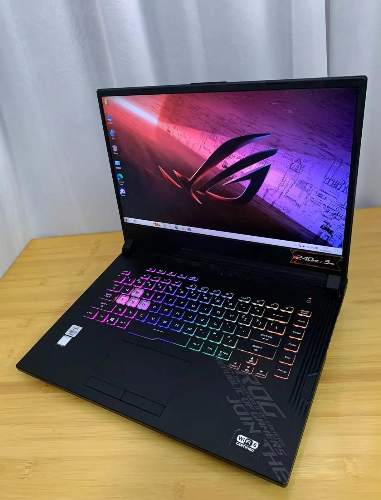

华硕 ROG 光魔 G35

ROG 光魔 G35 是华硕旗舰游戏整机，12 代酷睿 i9 与 RTX 30 系显卡组合，专为高刷电竞与 3A 大作打造。机箱采用风刃散热设计与大面积侧透，ROG 神光同步灯效支持联动外设，自带奥创控制中心，适合看重品牌信仰与整机调校的玩家。
客观评测
ROG 光魔 G35 以 i9-12900KF 与 RTX 3080 为核心，2K 分辨率高刷新率下电竞游戏帧率可达 150fps 以上，4K 高画质 3A 大作也能稳定在 60fps 附近。水冷散热在双烤中把 CPU 温度压在 88℃ 上下，整机噪音约 50 分贝，性能释放激进但噪音控制一般。32GB DDR5 内存与 SSD 加 HDD 的组合兼顾速度与容量，机箱提供多组扩展位。奥创控制中心支持性能模式切换与神光同步，整机调校完成度高。
主观点评
光魔 G35 摆在桌上就是个电竞图腾，灯效一开氛围感直接拉满，游戏帧数也很能打。我喜欢它开机即用、驱动和灯效都调好的省心感。但它满载的风扇声确实不小，建议放桌下使用，而且价格里包含了不少品牌溢价，自己装机能省一笔。适合认准 ROG 信仰、想要大牌整机售后保障的玩家。
优点与不足
- ROG 整机调校到位，性能释放充分
- 神光同步灯效联动，电竞氛围感强
- 散热用料扎实，长时间游戏稳定
- 信仰加成明显，价格偏高
- 满载噪音较大
- 机箱体积与重量都不小
参数规格
| 处理器 | Intel 酷睿 i9-12900KF（16 核 24 线程） |
|---|---|
| 显卡 | NVIDIA GeForce RTX 3080 10GB |
| 内存 | 32GB DDR5 4800 |
| 硬盘 | 1TB NVMe SSD + 2TB HDD |
| 散热 | 一体式水冷 + 多风道散热设计 |
| 电源 | 额定 750W 80PLUS 金牌（约） |
| 主板 | Intel Z690 芯片组 |
| 机箱 | 中塔侧透，前面板风刃进风设计 |
| 系统 | Windows 11 家庭版 |
| 前置接口 | USB-C、USB-A、音频接口 |
| 后置接口 | HDMI、DP、多个 USB-A、RJ45 |
| 网络 | Wi-Fi 6 + 蓝牙 5.1 + 2.5G 网口 |
| 灯效 | ROG 神光同步，支持外设联动 |
| 软件 | Armoury Crate 奥创控制中心 |